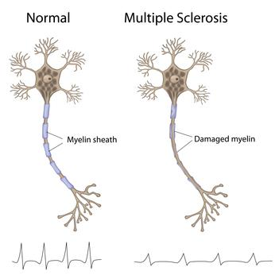
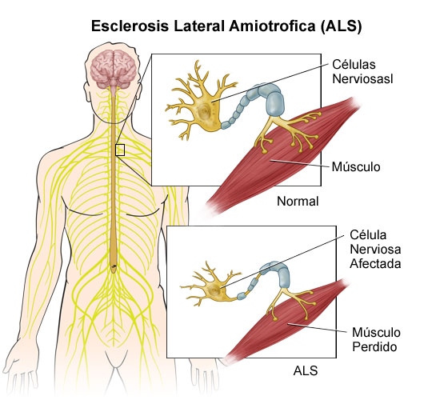

Sí existen fármacos para combatir el conjunto de síntomas que acompaña a la enfermedad, como son los calambres, la espasticidad, las alteraciones en el sueño o los problemas de salivación. Existen numerosas estrategias muy eficaces para cuando aparecen las alteraciones respiratorias o cuando surgen problemas relacionados con las secreciones. Los médicos rehabilitadores, fisioterapeutas, licenciados en actividad física, terapeutas ocupacionales y logopedas son los profesionales encargados de asegurar la independencia funcional a través del ejercicio y la utilización de los equipos técnicos oportunos.
La gran complejidad del tratamiento multidisciplinar hace necesario el desarrollo de vías clínicas que organicen y homogeneicen con sentido las atenciones a estos pacientes, en pos de mejorar su calidad de vida. En este sentido en 2006 se desarrolló en la Comunidad de Madrid (España) una red de atención con una vía clínica para los cuidados de estos pacientes en un trabajo en equipo coordinado por el Dr. Rodríguez de Rivera.
La FDA (Administración de Alimentos y Medicamentos) de Estados Unidos ha aprobado como tratamiento el uso de riluzol, una molécula que prolonga la vida varios meses porque bloquea la liberación de sustancias nocivas para las neuronas motoras: frena la liberación de glutamato, disminuyendo su efecto excitotóxico. Existe también la vía del uso terapéutico de factores neurotróficos,16 pero esta se encuentra con el problema de que, al tener que actuar sobre las neuronas a través de receptores específicos, precisan de ser administrados directamente en el líquido cefalorraquídeo o por vía intratecal.
.jpg)
Otra de las posibles vías para el tratamiento de la esclerosis lateral amiotrófica es el Concepto Bobath. Ferulización para evitar deformidades articulares. Por último, ciertos datos experimentales revelan que las células madre ejercen efectos neuroprotectores sobre las motoneuronas dañadas a través de factores liberados (sin embargo, no está claro aún si las células madre pueden llegar a reemplazar motoneuronas dañadas por la ELA)..
